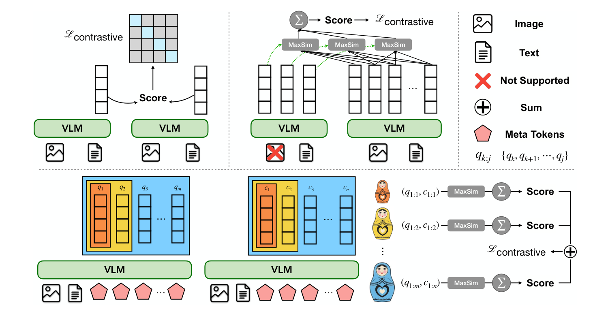
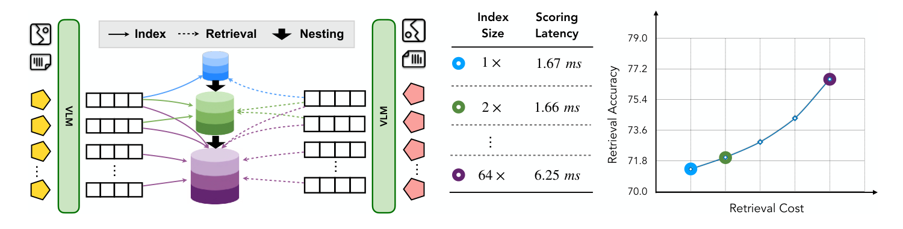
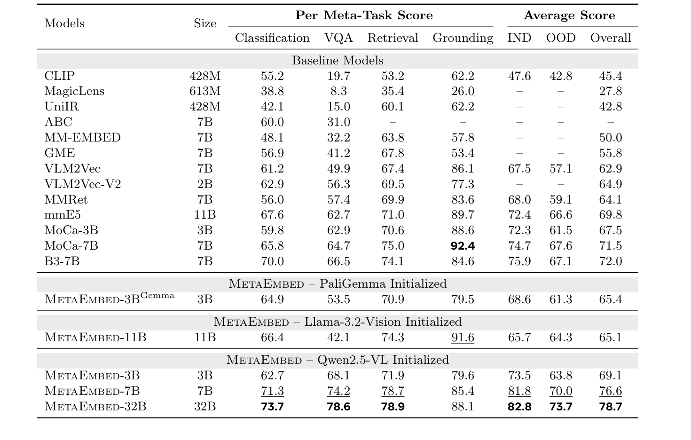
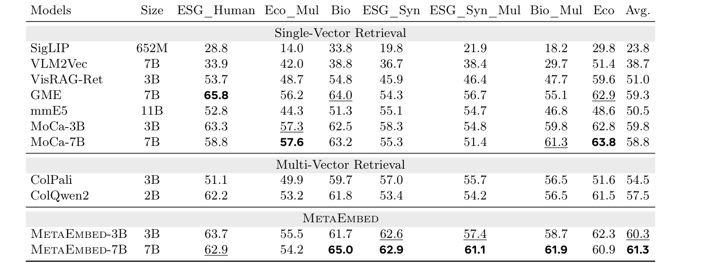
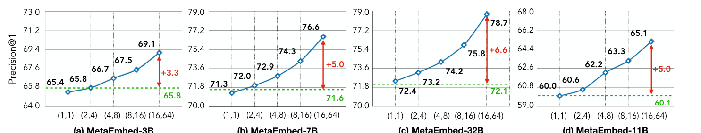
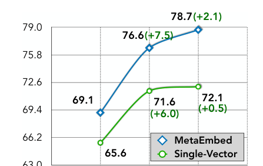
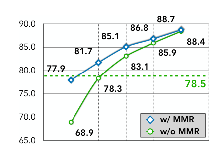
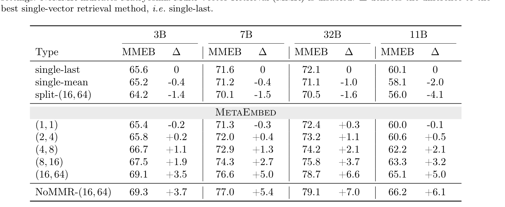
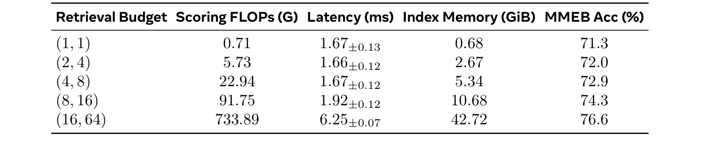

Paper walkthrough
MetaEmbed
Scaling multimodal retrieval at test-time with compact Meta Tokens, late interaction, and Matryoshka-style retrieval budgets.
Paper figures and tables are cropped from papers/MetaEmbed.pdf. Additional diagrams are teaching diagrams built in HTML/CSS.
Problem
Multimodal retrieval is caught between over-compression and too many vectors.
MetaEmbed tries to keep late-interaction expressiveness while making the number of vectors small, fixed, and adjustable at test time.
Single-vector retrieval
Fast and easy to index, but every image, table, chart, and paragraph is squeezed into one point.
Token-level multi-vector
Fine-grained matching, but multimodal-to-multimodal retrieval can require interactions across thousands of tokens.
MetaEmbed
Learned Meta Tokens summarize the input into compact multi-vector embeddings that can be truncated by budget.
Paper Figure 1
The paper frames MetaEmbed as a third path: compact vectors with late interaction.

Upper left: single-vector scoring. Upper right: conventional multi-vector MaxSim. Lower: MetaEmbed organizes query and candidate vectors into nested groups for coarse-to-fine scoring.
Mechanism
Meta Tokens are appended to the input, then harvested from the last hidden layer.
Input sequence
Extract only Meta Token states
H = F_theta(z0), then E_meta = normalized hidden states at Meta Token positions
Why this is different
The model does not index every visual patch or every text token. It learns a small set of contextualized vectors that act like retrieval-facing summaries.
Two forward passes
Queries and candidates are encoded separately, then their Meta Embeddings interact during scoring.
Separate capacities
The paper uses query-side and candidate-side counts such as 16 query vectors and 64 candidate vectors at full budget.
Late interaction
Scoring is MaxSim: each query vector keeps its best candidate match.
The retrieval intuition
A candidate gets credit when different query vectors can each find their strongest evidence somewhere in the candidate representation.
Why compact vectors matter
MaxSim is powerful, but its cost grows with the number of query and candidate vectors. MetaEmbed controls those counts directly.
Matryoshka Multi-Vector Retrieval
The same embedding can be read at several retrieval budgets.
The key training trick
Each prefix group is trained with its own contrastive objective, so early vectors must work alone while longer prefixes refine the representation.
Runtime knob
At indexing and scoring time, the system selects a group size such as (4, 8) or (16, 64) without retraining.
What "Matryoshka" means here
Smaller useful embeddings are nested inside larger ones, like prefixes of the same ordered vector set.
Paper Figure 2
Test-time scaling lets the retrieval system choose accuracy, latency, and index memory tradeoffs.

The nested index stores prefixes of the candidate vectors. Larger prefixes improve retrieval quality, while the table and curve make the compute and storage tradeoff explicit.
Fastest prefix index in the figure.
Full candidate-side budget in the paper's main setting.
Reported scoring latency for 100,000 candidates at full budget on A100.
Training
Every budget group learns through contrastive retrieval pressure.
same pair should score high
nearby wrong items should score lower
s_g(q, c) = MaxSim over the selected prefix group g
Why train all groups?
If only the full vector set were optimized, small prefixes would be accidental. MMR makes each prefix intentionally discriminative.
Main result: MMEB
MetaEmbed establishes strong universal multimodal retrieval scores, especially as the model scales.

Table 1: Precision@1 on MMEB, covering classification, VQA, retrieval, and grounding.
MetaEmbed-3B overall MMEB.
MetaEmbed-7B overall MMEB.
MetaEmbed-32B overall MMEB.
MetaEmbed-32B IND average.
Main result: ViDoRe v2
On visual document retrieval, MetaEmbed outperforms both single-vector and earlier multi-vector baselines.

Table 2: NDCG@5 across seven ViDoRe v2 visual document retrieval tracks.
MetaEmbed-7B average NDCG@5.
MetaEmbed-3B average NDCG@5.
What stands out
The 7B model beats ColPali and ColQwen2 on the average column while staying in a compact Meta Token regime.
Domain signal
The strongest MetaEmbed-7B cells appear in biomedical and multilingual tracks, which are exactly where document retrieval tends to stress a visual embedder.
Budget curves
More Meta Embeddings improve accuracy, and larger models benefit more from the extra budget.

Figure 3: MMEB Precision@1 rises as retrieval budget increases from (1, 1) to (16, 64).
3B
Moves from 65.4 at (1, 1) to 69.1 at full budget.
7B
Moves from 71.3 to 76.6, a five-point gain over the single-vector line.
32B
Shows the largest gain over single-vector retrieval in this plot: +6.6 points.
Ablations
The ablations separate three ideas: model scale, MMR, and naive multi-vector baselines.

Figure 4a: MetaEmbed keeps improving as model size increases.

Figure 4b: MMR matters most when retrieval budget is small.

Table 5: identical-setting comparison against single-vector and split multi-vector variants.
Useful reading
A naive split multi-vector baseline underperforms single-last, while MetaEmbed prefixes improve with budget. The architecture and objective both matter.
Efficiency
Latency stays flat for moderate budgets, but index memory grows with candidate vectors.

Table 3: MetaEmbed-7B scoring on A100 with 100,000 candidates and bfloat16 index storage.
Scoring latency through the (8, 16) budget stays nearly flat.
Full (16, 64) index memory for 100,000 candidates.
Full-budget MMEB accuracy for MetaEmbed-7B.
Systems interpretation
The budget knob is mostly an index-memory and late-interaction knob. The paper notes that query encoding, especially for image queries, can dominate total retrieval latency.
Deployment view
A practical MetaEmbed system can expose retrieval budget as an operational control.
Encode candidate
VLM produces ordered candidate Meta Embeddings.
Store prefix
Index only as many candidate vectors as the product budget allows.
Encode query
Use query-side Meta Embeddings for the selected budget.
Late interaction
Score with MaxSim over the selected query and candidate prefixes.
Adjust budget
Move between fast retrieval and high-accuracy retrieval without retraining.
Low traffic
Use larger prefixes for stronger quality when resources are available.
High traffic
Use smaller prefixes to reduce index memory and scoring work.
Large corpus
Choose candidate-side vector count as the main storage lever.
Caveats
MetaEmbed is flexible, but the paper still leaves real engineering tradeoffs.
Index memory is the bill
Full-budget storage is far larger than single-vector storage, so large deployments need a budget policy.
VLM backbone matters
The 11B Llama-3.2-Vision variant has strong grounding but much weaker VQA than Qwen2.5-VL variants.
Encoding can dominate
Improving MaxSim scoring alone may not solve latency when image-query encoding is the expensive step.
What I would watch next
Approximate search for multi-vector prefixes, compression for candidate Meta Embeddings, and mixed-budget pipelines where a cheap prefix retrieves candidates before a larger prefix reranks.
What the paper already answers
The ablations show that learned Meta Tokens beat naive split vectors, and MMR preserves full-budget performance while making small budgets usable.
Summary
MetaEmbed turns retrieval granularity into a test-time choice.
The paper's main contribution is not just "use more vectors." It is a trained ordering of vectors where early prefixes are useful and later prefixes add precision.
Compact multi-vector embeddings
Learned Meta Tokens replace thousands of patch or token vectors with a small retrieval-facing vector set.
Flexible late interaction
MaxSim scoring remains fine-grained, but the query and candidate vector counts can be selected by budget.
Scaling evidence
Results improve across MMEB and ViDoRe, with larger models gaining more from the full retrieval budget.